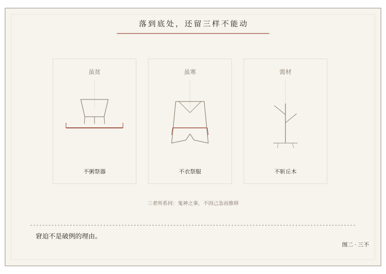

曲礼下 · 二·二十四 · 第 147 课
君子再穷，不卖祭器；再冷，不穿祭服；造屋子，不砍坟上的树。注「广敬鬼神也。粥，卖也。丘，垄也」。
说什么事：君子虽贫，不粥祭器；虽寒，不衣祭服；为宫室，不斩于丘木。
落在哪一层：礼。论三个「虽……不……」：贫、寒、需材，皆不足以破例。
为何编在此位：上节说器可造可假，此节说器不可卖、服不可穿用。允许与禁，先后相承。
【经】君子雖貧，不粥祭器。雖寒，不衣祭服。為宮室，不斬於丘木。
【注】廣敬鬼神也。粥，賣也。丘，壟也。
【疏】〔此节与二·二十三同疏〕广敬鬼神也者，祭器、祭服、丘木，三者皆鬼神之事，故广言之。[疏文另见卷四]
粥 注「卖也」。粥（音育）通鬻。
衣 此处作动词，穿。注疏标「於既反」，去声。
丘木 注「丘，垄也」。垄即冢垄，坟上之木。
广敬鬼神 注语。三者归一，皆鬼神所系，故曰广。
虽 三处「虽」字，是全节骨节：条件愈迫，例愈不可破。
君子即使贫穷，也不卖祭器；即使寒冷，也不把祭服当衣穿；为造房屋，不砍坟上的树木。
一个人落到底处，还留着几样不能动的东西——此节把这三样点出来。贫、寒、需材，都不是理由。礼的意义在此：不在顺境里守仪，在窘境里守那条不能破的线。
第一层 祭器不粥 祭器是「用君禄所作」之物（见下节注）。卖它，等于把所承的那一份折成钱。此例一破，祭祀就成了可变现的家产。
第二层 祭服不衣 祭服是行礼之服，穿它御寒，是把敬神之服降为御寒之衣。疏于礼者常在此处失手：不是不爱惜衣，是不辨衣为何物。
第三层 丘木不斩 坟上之木，非己之材。造屋需木，山上有木，偏取丘木，是就近占先人之物。
第四层 三者何以并列 注以「广敬鬼神」一语贯之。祭器、祭服、丘木，一为器、一为衣、一为木，形态全不同，所系者同：鬼神之事不可因己之急而推移。这就是「广」字的分量。
与今日何干 手头最紧的时候动什么，最能看出一个人的底线。有几样东西，无论多难，都不该拿去换钱、改作他用、就近取用。
| 左 | 右 |
|---|---|
| 虽贫不粥祭器 | 祭器不可折成钱 |
| 虽寒不衣祭服 | 敬神之服不降为御寒之衣 |
| 为宫室不斩丘木 | 坟上之木，非己之材 |
| 广敬鬼神 | 一注贯三事 |
| 粥 | 卖也，音育 |
| 丘 | 垄也，冢垄 |
画三段纵列，自上而下依次：一只三足器上压一道粗的横杠（示意不可出手），一件交领衣被一根绳系住、绳端打结（示意不可穿用），一棵立在地平线上的树、树根处画一道浅弧（示意坟垄）。三段之间以极淡的点线相连，纵贯一条细线到底。不画人、不写文字。赭色只用在最上一道横杠。
